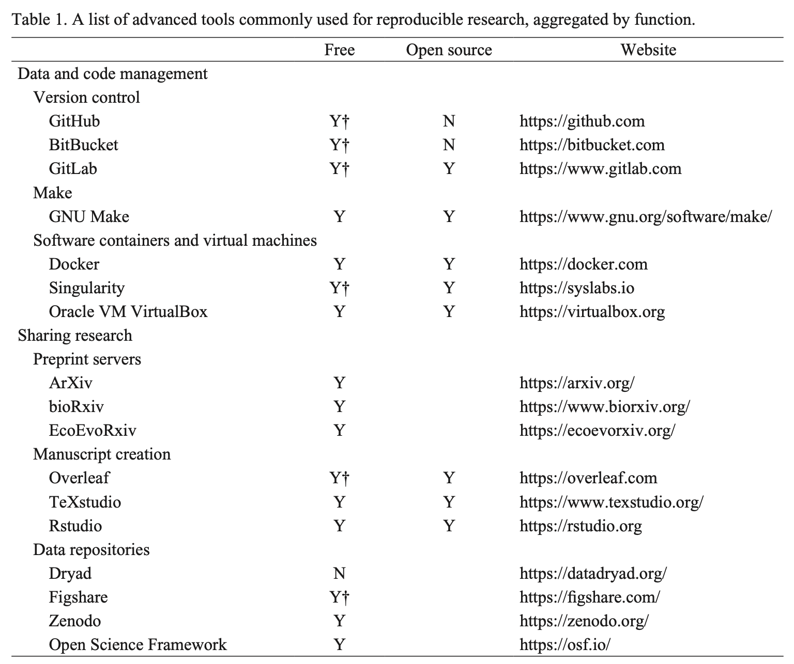

install.packages("tidyverse")BIO 621: Data Wrangling and Analysis Using R
- I was an R newbie too!
- Go over syllabus
- Install R and RStudio
- What is R?
- What are Markdown and R Markdown?
Syllabus
- The syllabus will be located here: https://github.com/vancleve/BIO621-DWVR.
- This is also where R and R Markdown documents will be located. The only files that will be kept on the Canvas site are the PDF copies of the reference books and the completed labs and figures that you submit.
- I’ll update the syllabus and schedule of topics as necessary.
Install R and RStudio
Downloading
First step, download R, RStudio, and Quarto
Required: computer with Windows 10 or 11 or Mac with macOS 10.15 or later.
To download R, go here: https://mirrors.nics.utk.edu/cran/.
To download RStudio, go here: https://www.rstudio.com/products/rstudio/download/#download.
You should be installing version 2022.07 or later.To download Quarto, go here: https://quarto.org/docs/get-started/.
Installing
If you need directions, this may help: https://quarto.org/docs/get-started/hello/rstudio.html. If you already have R and need to update your packages, go here: https://stat545.com/install.html (these are a little dated now since the release of Quarto, but should still be helpful).
Tidyverse
Many of the packages that packages that we will use have been helpfully collected together into a metapackage called tidyverse. Install this first thing by typing the following at the console:
Running RStudio
What is RStudio?
RStudio is an Integrated Development Environment (IDE) for the R programming language.
While you can write R code in any text editor you like and then run that code with the R interpreter, there are many things that an IDE can do that help you be more efficient when programming.
- Syntax highlighting
- NEW Visual editor (WYSIWYM editing: https://en.wikipedia.org/wiki/WYSIWYM)
- File/project organization (see “Files” pane)
- Examining variables that you’ve set (see the “Environment” pane)
- Easily execute code and examine its text output (see “Console”) or graphical output (see “Viewer”)
- View help files (see “Help”)
- Installing/updating R packages (see “Tools” menu)
- Debugging (see “Debug” menu)
- Projects (see “File” and “Tools”)
When using RStudio, I encourage you to:
Play around with different arrangements for the windows/panes
LEARN KEYBOARD SHORTCUTS. They can make you much, much more efficient.
- Shift+Alt+K (MAC/PC): Keyboard shortcut quick reference.
- Shift+Command/Control+K (MAC/PC): Render (or “knit”) current document (i.e., turn in HTML/DOCX/PDF)
- Command/Control+Enter (MAC/PC): Run selected lines
- Shift+Command/Control+Enter: Run current “chunk” (R Notebook only)
- etc
Use a Project for all assignments in the course (save them in a single directory or its subdirectories).
For example, to generate 10 random numbers between 0 and 1 we can easily run the following code:
runif(10) [1] 0.941319223 0.859183785 0.695974525 0.668217345 0.932585533 0.001843436
[7] 0.031287777 0.917124821 0.679953713 0.492401037To make sure you can do run the above, you want to run the following code that installs R Markdown:
install.packages("rmarkdown")For a cheatsheet on RStudio, go here:
https://github.com/rstudio/cheatsheets/raw/main/rstudio-ide.pdf
What is R?
First, there was “S”.
- S was designed by John Chambers and others at Bell Labs in the 1970s specifically for data analysis and statistics.
- R was developed in 1991 by Ross Ihaka and Robert Gentleman and re-implemented much of S after S became licensed software.
Then there was “R”
- R was open-sourced in 1995 and John Chambers and other statisticians are part of its core development team.
- R is object-oriented (i.e., you can build containers of variables and the like), like Java.
- R is interpreted (i.e., the interpreter turns interprets your text code immediately and runs it), like Python.
- R has a tonne of packages for statistics and biology.
- More on the basics of R next time.
What are Markdown, R Markdown, and Quarto?
Markdown: a plain text (i.e., just characters) way of “formatting” text
- Markdown is a kind of “markup” language (e.g., HTML).
- Designed for simplicity and readability
- No need to “view” Markdown to read it easily
- Often used in code documentation
- Increasingly used in full document preparation (journal article, books, etc)
Ok, let’s get Markdown!
First, this whole document is Markdown, so you can quickly see examples of the following:
Headings are created with hash symbols “#”
- “#” is the “first” heading
- “##” is the “second” heading, which is smaller (how much smaller? set by the “stylesheet”)
- etc
Italic text in encapsulated by one * or asterisk, Bold text by two asterisks.
Lists can start with -, *, or +.
- Sublists are indented with four spaces.
New paragraphs are separated by blank lines.
Line breaks, without a new paragraph, need two spaces
in order to be recognized. These can be used in lists too.Links use angle brackets <>: https://www.r-project.org/
Links with different text use
[text](http://link.to.something)Images use
For more details, see the Quarto docs. Quarto uses a “flavor” of Markdown created for Pandoc, which is the tool Quarto uses to convert Markdown into all the different document types (e.g., PDF, DOCX, HTML, etc).
R Markdown and Quarto: mixing text (Markdown) and R code (R)
Ok, lets put some R in this thing.
Make a code “chunk”” with three back ticks followed by an r in braces. End the chunk with three back ticks:
paste("Hello", "World!")[1] "Hello World!"Place code inline with a single back ticks. The first back tick must be followed by an R, like this: Hello World!.
You can control how the chunks of R code work in the rendered document by adding options like #| echo: false to hide the code when you create the HTML
[1] 0.04203279 0.79226833 0.93986163 0.66376638 0.25807401 0.07528966
[7] 0.16609249 0.79832640 0.99789842 0.37048815or you can add the option eval=FALSE so that the code isn’t evaluated (see the install.packages lines in this .qmd)
You can do plots too. Let’s do one with a caption (“This is a cool_plot”, which you can see Quarto output, which is useful for debugging) that is just a bunch (1000) of normally distributed numbers (mean=0, std=1):
plot(rnorm(1000, 0, 1))
Now, lets do something a little more interesting. We can pull in data from all kinds of places including websites and actively updated databases. For example, here are COVID-19 cases numbers for the United States for Kentucky and Tennessee from the New York Times https://github.com/nytimes/covid-19-data:
library(tidyverse)
us = read_csv("https://raw.githubusercontent.com/nytimes/covid-19-data/master/us-states.csv")
us_daily_cases = us %>%
# make each state its own column
pivot_wider(date, names_from = state, values_from = cases) %>%
# for each column subtract, subtract the previous day's case #
mutate(across(where(is.numeric), ~ .x - lag(.x))) %>%
# put baack into tidy format for plotting
pivot_longer(-date, names_to = "state", values_to = "cases")
us_daily_cases %>%
filter(state %in% c("Kentucky", "Tennessee")) %>%
ggplot(aes(x=date, y=cases, color=state)) +
geom_line() +
labs(y="Daily COVID-19 cases", color="State") +
theme_classic()
More about using R with Markdown via Quarto can be found in the here: https://quarto.org/docs/computations/r.html.
Why Quarto?
You may be asking yourself how this plain text gets mixed or “knitted” together with the R code and output and converted in HTML (or another document format). This is where Quarto comes in. Quarto is also a program that reads the .qmd first. It looks for R code blocks, runs them, and then takes that output and knits it together into a Markdown document. Quarto gives that Markdown document to Pandoc, which converts it to the output format of choice (e.g., HTML). This knitting process used to be done by an R package called rmarkdown, which is actually still used by Quarto. R Markdown however was focused on R whereas Quarto can be used with other languages such as Python and Julia. Hence, learning how to interact with Quarto can be helpful even if you need to switch to compling documents with calculations done using those languages.
Reproducible Research

Lab
Write a paragraph about what kind of data you are thinking of analyzing and visualizing
Create your own Markdown document.
Give the document a title and author.
Use some Markdown elements to structure your document. Include the following:
- headings
- a link
- an image
- some bold or italic text
Make sure you can get render proper HTML in RStudio. (Select the “Preview in Viewer Pane” option under the gear icon for seeing the HTML)
Remember to upload the file with a “.qmd” suffix to Canvas.